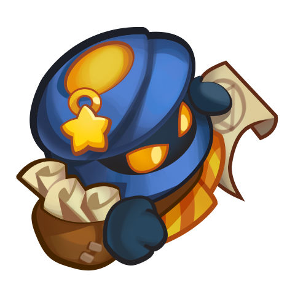

Tamer

Tamer's ability is simple, he summons a portal which spawns minions behind him, you can kill him with a few damage units.
Gorgon
Gorgon's main ability is to turn your units into rock, two at a time. When your units are turned to stone they can't do any damage or perform abilities but you can counter this by having many units on the board.
Bedlam
Bedlam is one of the most feared bosses in rush royale, and many people don't know how to counter him or what kind of cards work well against him.
His ability is to randomize all your units on the board, so several position-sensitive decks will want to kill Bedlam before he does this.
One way to counter Bedlam is to have Bombardier out along with some high damage units. Bombardier has the ability to stun an enemy for a few seconds, allowing you to kill him before he uses his ability.
If your damage output is very high, you can kill him without Bombardier.
Warlock
Warlock's ability destroys a randomly targeted unit with a fireball. You can counter him with very high damage units or with the aid of Bombardier.
Tribunal
Tribunal removes 1 tier from half the units on your board, which can be annoying if you have high tier units out already. Bombardier cannot stop this from happening, but if you have extremely high damage output you can sometimes kill her before the ability is cast.
Puppeteer
Puppeteer has two abilities, first he moves all your units one square to one side and then he removes 1 mana upgrade level from your whole team.
If needed, you can use Bombardier plus high damage units to kill him before he does this.
Bannerlord
Bannerlord has a defensive critical attack aura that protects monsters from additional damage in a small radius.
Vortex
Vortex is able to change his shape, speed up himself and monsters nearby, and most importantly, become immune to any control effects.
He is pretty straightforward to dispose of, if you have high damage units on board.
Boss wave list:
You will notice a pattern here, after wave 60 the bosses appear every two waves in this order: Tamer - Gorgon - Bedlam - Warlock - Tribunal - Puppeteer. In between each boss we get either a Bannerlord or Vortex(B/V). I have presented up to wave 90 here but you can easily predict which boss is next if you follow the pattern.